02 · 数字孪生图层 — 五层空间要素叠加
点击下方图层按钮切换显示。每个图层代表一个空间子系统。所有几何为 Provisional geometry，待官方CAD/GIS数据替换。
03 · 三核详细设计 — 北园 · 中社 · 南城
每区由不同主导因子驱动，形成“策源→加速→聚集”产业链梯度与空间节奏。
众智园 · AI自主创新加速区
- 清河“海绵+算力”界面，退台建筑逐级跌落至30m生态缓冲带
- 可参观的安全治理沙盒，建筑底层全透明玻璃幕墙
- 北五环跨路“创新桥”，双层步行桥连接南北
北京AI原点社区
- 代际共生社区：西翼24m老年照料，东翼60m青年公寓
- “五分钟转化半径”：实验室→协作空间→原型测试场全步行
- 公共代码墙：30m长LED立面实时显示开源贡献流
大钟寺 · AI产业聚集区
- “站城共生环”：地下站厅→地面广场→空中连廊三层步行系统
- “双时钟运营”：日间商务展示+夜间社区文化
- 铁路工业美学立面：铁轨构件、信号灯、苏州码子融入建筑表皮
04 · 设计哲学 — 五维思辨驱动的城市设计
SEED 5D框架从基因组学迁移至城市设计。每个空间决策都可追溯到这五个维度的推演。
设计生成逻辑 — 从不可约事实到空间提案
六条不可约真理
5类城市模型
排除4类
6因子×6层级
差异化锚定
5种默认偏见
系统性自检
城市设计方案
溯源
人口数据→海淀统计年鉴S级。气候约束→气象局30年标准值。每个主张可追溯到具体锚点。
客观
发现AI Agent五种默认倾向（技术乐观主义、青年中心主义等），通过代际共生、四季策略主动校正。
穷举
硅谷复制型、全盘保护型、白板重建型、单一功能型均被排除。“共生演化型”是剩下的必然选项。
可验证
四个可证伪设计主张：共生带vs传统园区、30分钟圈vs气候、代际社区vs纯青年、12花园vs常规公园。
05 · 六因子权重矩阵
因子权重从第一性原理推导而出。（★ 主导 / ☆ 参照）
| 因子 | 权重 | 统筹研究 | 总体设计 | 重点区域 | 场景设计 | 几何生成 | 指标计算 |
|---|---|---|---|---|---|---|---|
| · 政策战略 | 0.25 | ★★★ | ★★★ | ★★★ | ★★★ | ☆☆☆ | ★★★ |
| · 人口结构 | 0.20 | ★★★ | ★★★ | ★★★ | ★★★ | ★☆☆ | ★★★ |
| · 气候环境 | 0.18 | ★☆☆ | ★★★ | ★★★ | ★★★ | ★★★ | ★★★ |
| · 历史文脉 | 0.17 | ★★★ | ★★★ | ★☆☆ | ★★★ | ☆☆☆ | ☆☆☆ |
| · 学术产业 | 0.12 | ★★★ | ★★★ | ★★★ | ★★★ | ☆☆☆ | ★☆☆ |
| · 空间约束 | 0.08 | ★★★ | ★★★ | ★★★ | ★☆☆ | ★★★ | ★★★ |
06 · 12 花园 · 12 场景案例
点击每个花园展开完整场景案例，包含具体人物、空间设计、AI技术嵌入和季节行为。
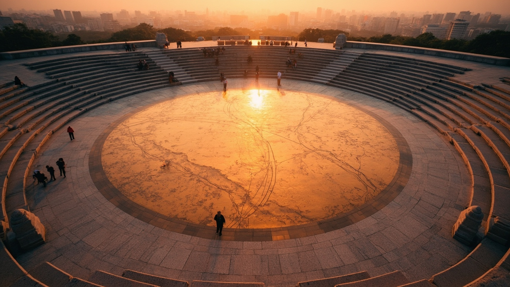
空间设计要点
直径36m下沉广场，地面镶嵌铜版京张铁路地图，轨道线嵌入暖光LED。三级同心圆石阶：外环观景座、中环通行道、内环AR互动区。南北两侧无障碍坡道，配扶手与休息平台。
人物与AI互动
清晨7:30，72岁退休铁路工程师陈伯带8岁孙女小雨来到广场。小雨戴AR眼镜，铜版地图上浮现1909年蒸汽机车3D模型沿轨道缓缓行驶。陈伯指着西直门起点讲当年爷爷参与修建的故事。AR实时生成詹天佑虚拟人像，向小雨点头微笑。边缘AI摄像头识别长者步态，自动调亮地面灯光指引安全路径。
空间设计要点
沿旧铁轨100m线性展廊。11个花岗岩标本台沿轨分布，每台集成NFC感应与微型LED说明屏。轨间铺碎砾石，两侧植春季樱花。轻触岩面触发AI矿物识别——即时显示岩石名称、形成年代、地质构造。户外课堂区可容纳30名学生。
人物与AI互动
周二上午10:00，中关村二小四年级30名学生上地质课。老师用平板点击'白垩纪'主题，11个标本台同时点亮蓝色灯光，地面投影出古代海洋场景。学生小杰将平板对准花岗岩标本拍照，AI识别并语音播报：'花岗岩，火成岩，形成于约1.2亿年前，含长石、石英、云母。'全息区浮出3D地质剖面动画。
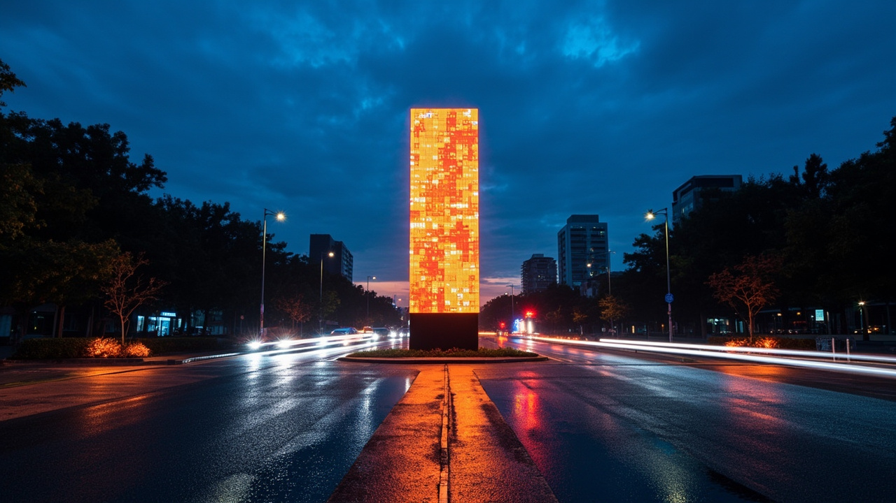
空间设计要点
路口中央4m高LED数据柱实时显示交通指标：PM2.5/车流量/等待时间。四角各设600㎡口袋公园，铺铁锈红铁路记忆铺装。每角设候车亭——内置AI信号优化屏、USB充电、冰雾降温喷头（夏季）。利用旧枕木做座椅与花池缘石。
人物与AI互动
傍晚17:45晚高峰，六道口路口。数据柱显示'当前等候62秒→AI优化后38秒'。北漂程序员小王刷手机看到绿灯倒计时-12秒准确预测，加速通过。道口西角，外卖骑手老李在候车亭给手机充电，屏幕上显示'您的外卖路线红绿灯已优化，预计节省7分钟'。冰雾喷头启动降温3°C。
空间设计要点
圆形纪念广场，詹天佑半身铜像居中。后方14m弧形LED墙展示工程箴言动态书法。十座3m高苏州码子钢雕沿弧排列，内置暖光LED。地面铭刻'1905-1909京张铁路建设时间线'。北侧设工程师宣誓互动墙——手掌按压即生成个性化职业道德承诺书，区块链存证。
人物与AI互动
五四青年节上午，50名清华土木系学生在此举行入职宣誓。每人将手掌按压在互动墙上，AI根据专业方向和个人志愿生成个性化'工程职业道德承诺书'。墙面LED矩阵逐行亮起金色承诺文字。宣誓完成后，区块链存证证书生成，手机扫码即可验真。老教授张院士致辞：'1909年詹天佑在这里用人字轨翻越八达岭，今天你们在这里宣誓——工程师精神，薪火相传。'
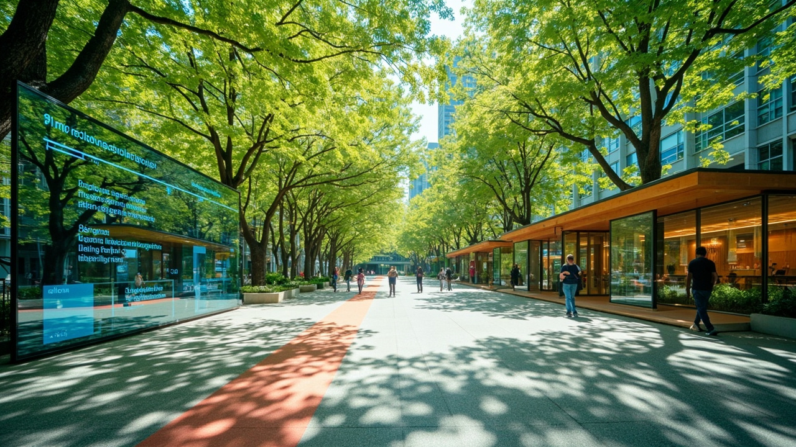
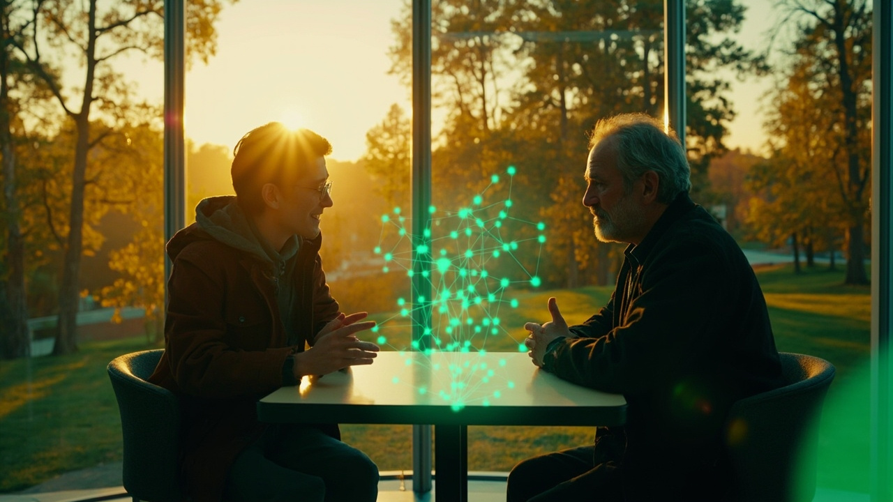
空间设计要点
4m高户外防眩光协作大屏居中。三个玻璃+木材协作亭——每个亭内设4人圆桌+全息投影。地面用彩色路径标记通向各校的步行路线：清华1.2km（紫）、北航2.8km（蓝）、北林1.5km（绿）。AI实时抓取周边高校公开研究课题，进行跨学科匹配推荐。
人物与AI互动
清华计算机系博士生小李的课题'城市交通流预测'被AI系统匹配到北林林教授'城市热岛效应'研究。系统推荐：'交通流→碳排放→热岛，可联合建模'。两人在协作亭见面，全息投影同时显示交通热力图与植被覆盖图。林教授：'你这个模型加权我的树种蒸腾数据，精度至少提升15%。'三周后，跨学科论文被NeurIPS接收。
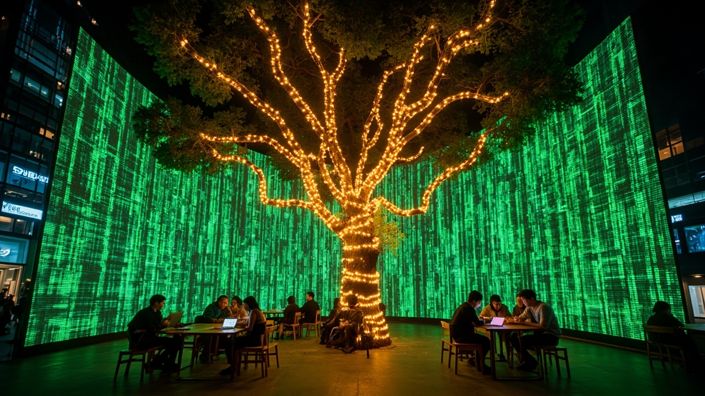
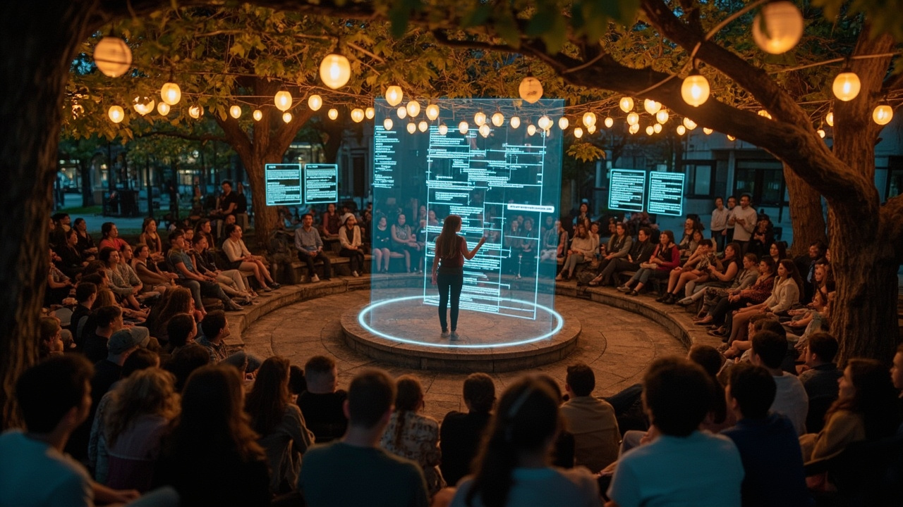
空间设计要点
30m弧形LED代码墙实时展示GitHub Trending仓库的代码瀑布流。千年古银杏树下设圆形石阶小剧场（40座），树冠挂暖色串灯。周边散布木质工作台（USB+WiFi）。深夜模式——22:00后屏幕亮度自适应。设AI实时双语字幕屏，支持中英日韩即时翻译。
人物与AI互动
周五晚8:00，35人围坐银杏树下参加闪电演讲。北大研究生小赵分享'面向视障人士的AI语音导航'开源项目，代码全息投影在空中旋转，AI实时双语字幕在侧屏滚动。台下日本留学生用日语提问，AI实时翻译为中文：'盲道识别在雨天的准确率如何？'小赵调出雨天测试数据回答。GitHub Star数在现场从237飙到512。
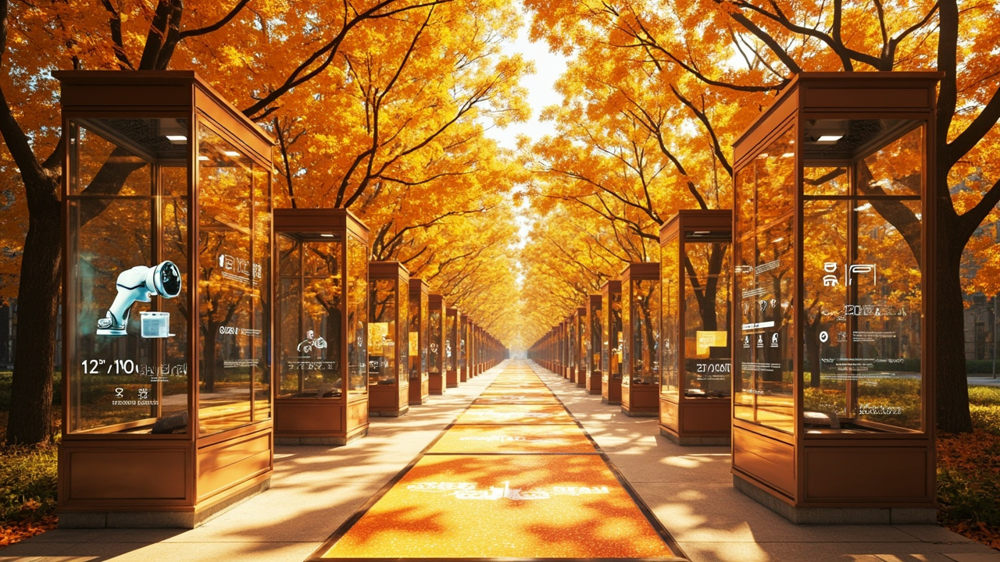
空间设计要点
6个标准化6m高玻璃+钢结构展亭，沿公园步道间隔60m排列。亭间LED地砖播放AI企业预览动画。每亭设NFC感应器与全息展台——投资者刷手机即获取BP摘要、融资历史、技术白皮书。支持联邦学习隐私保护：企业数据不出亭，AI匹配在TEE内完成。
人物与AI互动
VC合伙人刘女士用手机NFC轻触3号展亭，全息屏幕弹出该AI创业公司BP摘要——'工业缺陷检测，A轮，已服务12家工厂'。她感兴趣，点击'请求详细数据'。亭内TEE系统发起到该企业服务器的联邦查询，在不泄露具体客户名单的前提下返回脱敏指标：'缺陷检出率99.3%，误报率0.7%'。刘女士在亭内与创始人视频通话，30分钟后签署NDA。
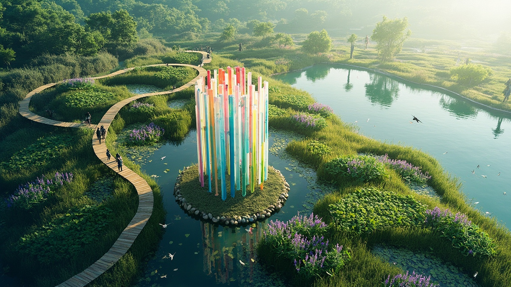
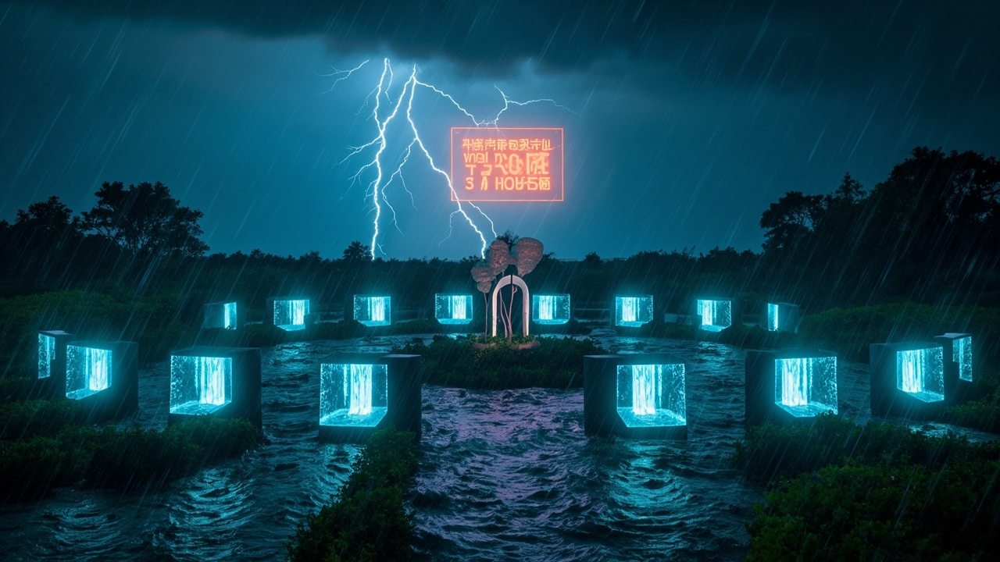
空间设计要点
沿清河12级梯级雨水花园，种植芦苇、千屈菜、荷花等本地湿生植物。中央4m高数据水柱雕塑——彩色水柱高度实时反映降雨量与水质指标。木栈道穿越湿地，设3处观景平台。每级雨水花园配智能闸门与水位传感器，AI根据气象预报提前24h调整蓄水策略。
人物与AI互动
7月暴雨红色预警。AI系统提前24h预测降水量120mm，自动开启12级梯级闸门预泄50%蓄水，腾出8000m³调蓄空间。暴雨中，数据水柱急速上升——'当前蓄水率78%，水位+1.2m，预计3h后达峰'。社区管理员老周在手机端实时监控，AI建议：'3号闸门开启至75%，5号关闭以保护下游荷花区。'雨后2h，12级雨水花园全部恢复到安全水位。全年蓄水8.2万m³，全部回用于公园灌溉。
空间设计要点
6m宽弧形人行天桥跨北四环，两端各设2部全玻璃无障碍电梯。桥面铺防滑暖色铺装+连续LED扶手灯带。桥两侧设绿植花箱（观赏草+常绿灌木）。桥中段设2处观景台——可见西山天际线。休憩站含紧急呼叫按钮、自动售货机、手机充电桩。AI无障碍导航App提供全路径规划。轮椅通过后绿灯自动延长+12秒。
人物与AI互动
轮椅使用者张女士打开'无碍出行'App规划路线——'从地质大学到对街商场'。App推荐跨路花园天桥路径——2部电梯+平坦桥面+自动延长的绿灯。到达路口时，AI摄像头识别轮椅，信号灯自动显示'+12s'绿延。电梯内语音播报楼层，盲文按钮。张女士在观景台停下，拍下西山落日发朋友圈：'第一次觉得过马路也可以是享受。'
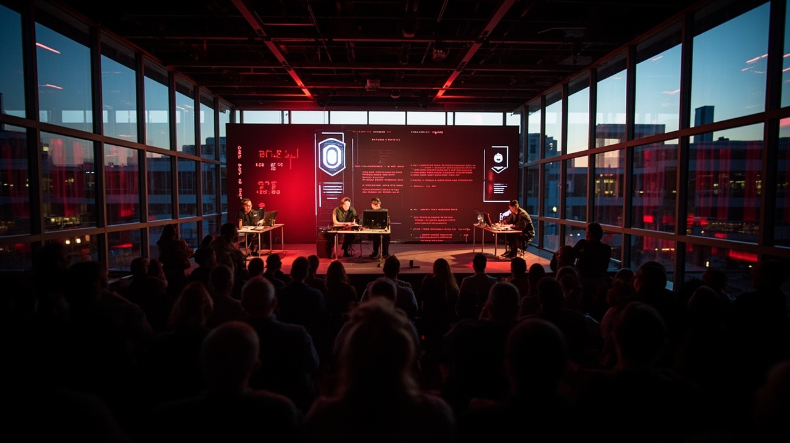
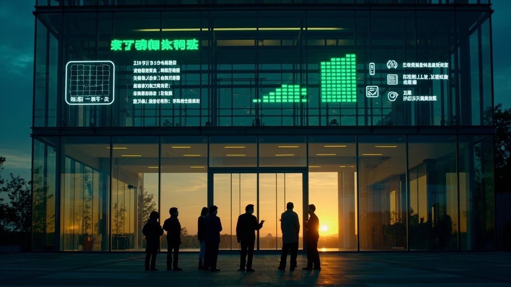
空间设计要点
双层玻璃幕墙建筑，60座阶梯礼堂式红队测试中心居中。舞台设3个红队工作站，大屏实时展示对抗攻击过程——红队尝试越狱/投毒/后门攻击，绿墙计数累计发现漏洞数。室外6m高LED公共仪表盘显示透明化指标：'累计发现23→已修复18→正在测试LLM-v4.2'。透明安全——所有测试公众可见。
人物与AI互动
某头部大模型企业提交最新LLM-v4.2版本进行安全沙盒测试。3名红队安全研究员分组对抗：A组尝试提示注入越狱，B组构造恶意训练数据投毒，C组在模型权重中搜索后门触发器。大屏实时显示：'越狱尝试：127次→成功：0次；投毒检测：3个异常样本→已隔离；后门扫描：2个可疑神经元→已标记'。3h后测试报告自动生成并发布于室外LED仪表盘。公众扫码可查看完整报告。
空间设计要点
大钟寺TOD核心区，玻璃隔音数据签约亭×6，每亭配电子签名终端+合规AI界面。建筑外立面设计动态数据流可视化——暖色光流速度代表实时交易量。保留铁路工业风格：裸露钢梁+信号灯改造壁灯。TEE可信执行环境节点——数据不出域，模型参数加密传输，零知识证明验证。
人物与AI互动
某三甲医院影像科王主任希望将2300例CT数据用于AI训练但担心隐私泄露。通过联邦学习平台：医院数据不出服务器，模型参数加密后在TEE节点与AI企业训练。亭内合规AI全程监控——'数据使用范围：仅用于肺结节检测模型训练，禁止其他用途'。3天后模型AUC从0.91提升至0.94，医院获得模型使用权+收益分成。零知识证明自动生成合规报告，监管部门实时可查。
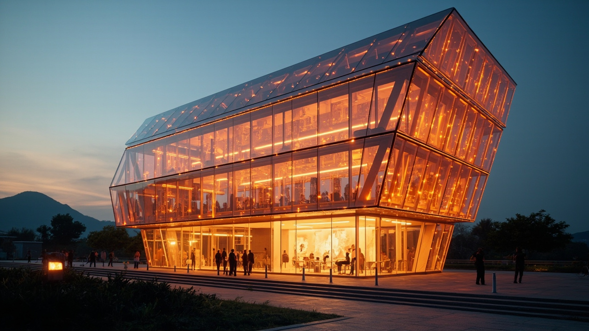
空间设计要点
3层建筑总高18m。1层'动态未来模拟'弧形屏幕厅。2层'公众愿景墙'数字马赛克。3层屋顶观景台俯瞰9km公园全貌。双层呼吸式幕墙内层LED矩阵外层光伏玻璃——日间发电夜间成为公园北端视觉标识。
人物与AI互动
开园日，初二学生小林对着愿景墙说出愿望：'我希望每个孩子都能用AI学习任何东西。'语音转为发光文字刻入数字马赛克，与其他999条市民愿望汇聚成光之星座。3层屋顶观景台，小林用AR望远镜看9km公园——从北五环到西直门，12座花园在夕阳下形成一条金色光带。AI语音导览：'你现在看到的是中国第一条智慧铁路遗产廊道，而我们站的地方——是它的未来。'
07 · 四季共生策略 — 气候适应性设计
- 户外AI测试草坪开放 — 年度活动启动窗口
- 科技市集沿公园主轴展开
- 建筑立面可开启比例 > 60%
- 花粉传感器 + 过敏原预警系统就位
- 遮荫最大化：乔木覆盖率 > 40%，喷雾降温系统开启
- 雨水花园全效运行 + AI雨洪预警
- 室内AI体验为主，夜间户外活动(20-23时)
- 海绵设施峰值流量削减 ≥ 60%
- 公共空间使用峰值 — 全年最高人流密度
- 国际会议窗口期：全球AI活动周 · 开发者大会
- 户外路演与展览沿9km展开
- 银杏景观道：京张金秋IP
- 室内暖廊优先 — 全线贯通玻璃暖廊系统
- 冰上AI光影展示：结冰水面做投影载体
- AI冬季学校：高校寒假集中教学与黑客松
- 线上协作峰值：元宇宙平行会场
08 · 人口基底 — 311万人的设计锚点
海淀区2025年末常住人口311.1万，人口密度7,216人/km²。数据来源：海淀区2025年统计公报（S级）。
09 · Agent任务覆盖与自检状态
六项征集任务全部覆盖。完整证据保存在 compliance/standard/design_depth_matrix.json 中。
Passed
- Deterministic validation
- Spatial review
- Visual packaging check
- Professional evidence review
- Bilingual contract (zh+en)
Known Limitations
- Provisional boundaries — 待官方polygon
- 控规条件缺失 — FAR/高度pending
- 图纸为概念占位
- 工程可行性待确认
10 · 总览仪表盘
设计总览：地图范围、用地分区、交通体系、蓝绿空间、更新项目、AI场景、核心指标与假设条件。
总览地图
设计范围：海淀区京张铁路走廊沿线约 11.4 km²，北起北五环清河，南至西直门交通枢纽，总长约 9 km。基地涵盖三核（北园·中社·南城）、12座AI主题花园，沿线串联高校、科研机构、TOD枢纽与生态廊道。
三层范围
用地分区
用地结构：AI研发与产业用地（核心）、居住与公共服务配套（支撑）、绿地与公共空间（品质）、交通与市政设施（基础）。设计保留并强化铁路工业遗产文脉，新增科研协作、AI展示、数据交易等创新功能。
交通慢行
构建"轨交+慢行+AI信号优化"三位一体绿色出行体系。跨北四环无障碍人行天桥缝合南北慢行断点。全线9km绿道贯通，AI自适应信号灯优化路口等候时间。4号线/13号线/昌平线多站TOD联动。
蓝绿公共空间
沿清河12级梯级雨水花园形成海绵城市示范段。全线12座AI主题花园构成线性公园系统。保留千年古银杏等历史树木。绿地率 12.3%，公共空间率 7.3%，年雨水回用 8.2 万 m³。
更新项目
分三期推进：一期（2026-2028）西直门起点花园、地质花园、六道口花园、詹天佑花园；二期（2028-2030）近校花园、创新花园、产业花园、水岸花园；三期（2030-2032）跨路花园、加速花园、交汇花园、展望花园。含新建、改建、保留提升三类项目共 12 个花园 + 3 个重点区的城市更新。
AI 场景
核心指标
假设
- A-BOUNDARY-001：基地边界与关键区域多边形为暂定值，基于官方文字描述推导。当正式CAD/GIS红线可获取时，所有设计几何与指标需重新计算。
- A-CONTROLS-001：规划管控条件（容积率、建筑高度、绿地率等）尚待官方附件确认。所有强度与高度建议为概念方案。
- A-CLIMATE-001：气候数据基于海淀气象局1981-2010三十年平均值。设计策略纳入+1.5°C变暖缓冲。
- A-HERITAGE-001：文化遗产信息基于公开来源。正式保护范围与要求需从文化遗产主管部门确认。
- A-ENGINEERING-001：桥梁、隧道、海绵城市等工程可行性需地勘与管线综合后方可确认。